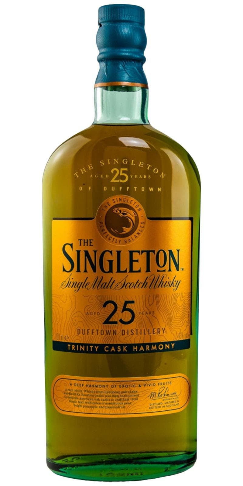
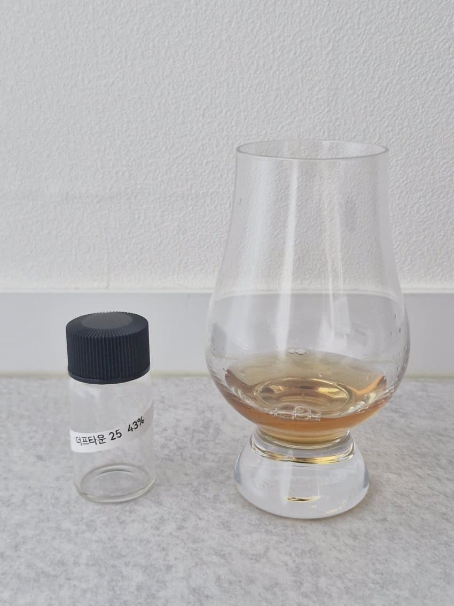

N
생강, 정향, 육두구, 건살구, 복숭아, 과일젤리, 츄잉껌
21년에 비해 셰리캐스크의 영향이 더 느껴진다(향신료, 묵직함)
과일젤리나 츄잉껌의 달콤하고 인위적인 과일 향
P
크리미, 적사과, 베리류, 생강, 정향, 육두구
크리미한 질감
살짝 퍼석한 적사과
새콤한 베리류
알싸한 생강
정향, 육두구의 스파이스
F
후추, 육두구, 건자두, 크림, 우디
다소 자극적인 목넘김과 함께 느껴지는 향신료
달큰한 건자두를 얹은 크림에 씁쓸한 우디함 약간
21년에 비해 취향과 멀어 다소 아쉽지만 25년 또한 평가절하된 듯한 퀄리티
나눔해주신 홀짝홀짝헤으응 님 감사합니다
댓글 4개